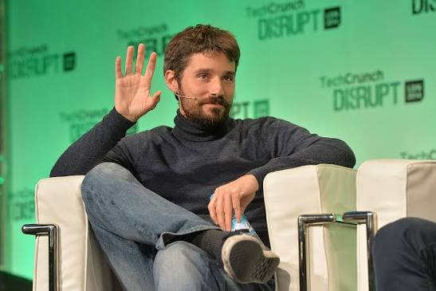

Кто такой

Соломон Хайкс родился в году в
Где учился
Он поступил во французскую школу Epitech — молодое, нестандартное учебное заведение, где обучение строилось на непрерывном программировании. Это ему нравилось. Epitech не давала академических степеней в привычном смысле — она давала практику и среду единомышленников.
Как начал работать
Постепенно он попал в орбиту стартапов, хотя поначалу был полным аутсайдером в этом мире. Однажды кто-то рассказал ему о них — и мысль засела. Он вернулся в дом матери в пригороде Парижа и работал из подвала. Образ программиста в подвале — почти мифологический. Но в случае Хайкса это буквально то, с чего всё началось.